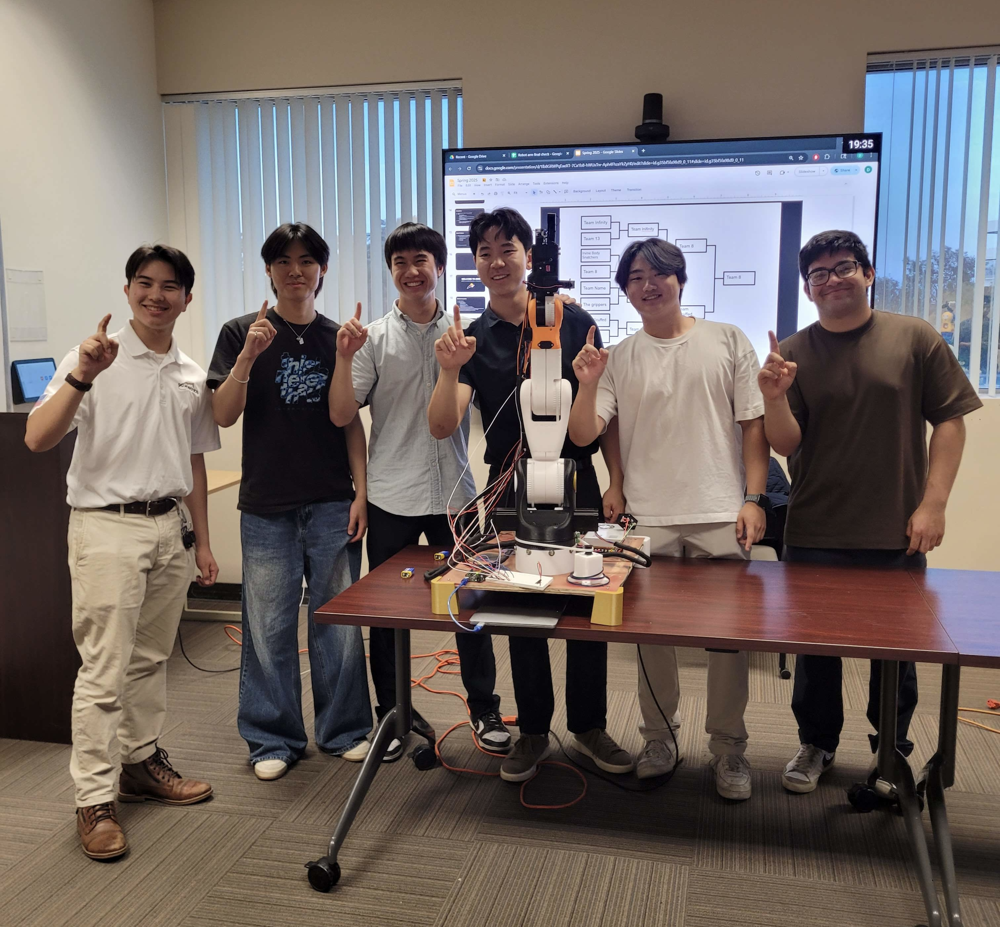
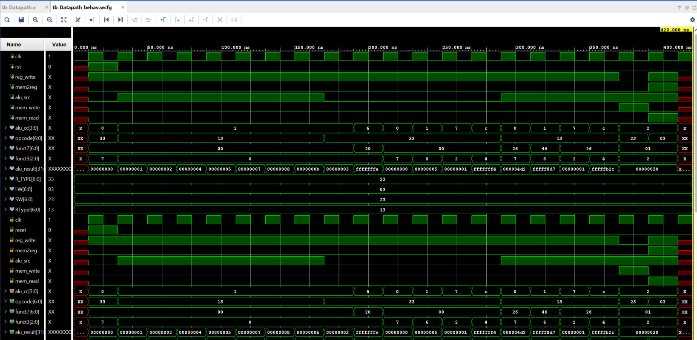
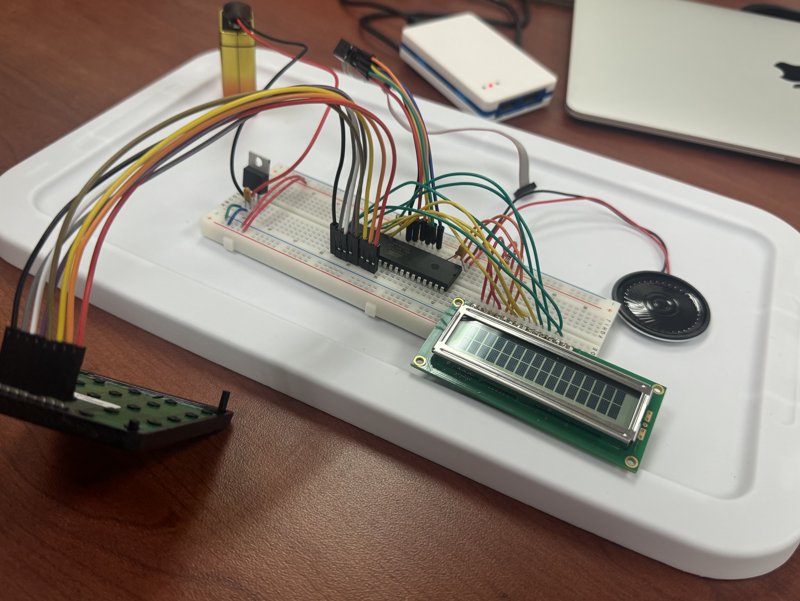

Featured Projects
Rock-Paper-Scissors Robotic Hand
Overview: Designed an Arduino controlled robotic hand as a team of 6; using stepper motors, stepper drivers, servo motors, RAMPS shield, and push-button input to simulate Rock-Paper-Scissors gameplay.
My Role: Developed the embedded C control logic, configured PWM signals, and handled physical integration of the servo mechanisms.
Challenges: Faced timing and jitter issues with servo control, resolved by rewriting delay loops and tuning duty cycles.
Outcome: Fully functional hand with reliable gesture execution. Learned how low-level control and real-world hardware tolerances interact.

32-bit ALU in Verilog
Overview: Implemented a modular 32-bit Arithmetic Logic Unit in Verilog supporting ADD, SUB, AND, OR, and SLT operations.
My Role: Wrote structural Verilog code and created a comprehensive testbench using ModelSim.
Challenges: Debugged issues with signed overflow detection and propagation of carry-out signals during subtraction.
Outcome: Passed all simulation cases with clean waveforms. Gained confidence in digital logic debugging and waveform interpretation.

Homemade Simon Game
Overview: Built a microcontroller-based memory game with a partner; involving sequenced button presses. Integrated an ALU, colored LEDs, keypad, speaker, and LCD to replicate the classic Simon experience.
My Role: Programmed random pattern generation, audio feedback using tone frequencies, LCD visual output, and keypad input handling.
Challenges: Managing timing across multiple peripherals with limited CPU cycles and memory. Coordinating non-blocking input while updating display and audio output.
Outcome: Successfully created a fully functional, interactive Simon game that improved team understanding of hardware-software integration and user interaction timing.
